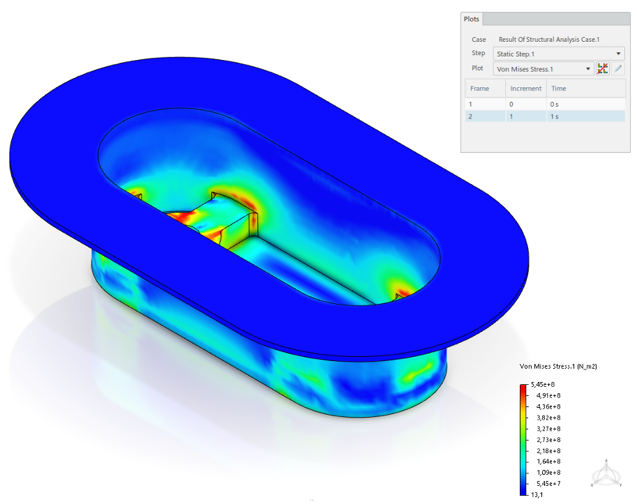

FEA of Suspension Inserts
Finite element analysis of a double aluminium suspension insert developed for the EPFL Racing Team, with focus on stiffness, stress levels and safety under traction, shear and torsion load cases.

Overview
This project focused on the structural validation of a suspension insert integrated into the monocoque-side interface of a Formula Student car.
The work combined CAD preparation, FEA in 3DEXPERIENCE, mesh convergence studies and interpretation of critical load cases.
Approach & Results
The insert was analysed with a linear static finite element model. Symmetry was used when possible to reduce the computational cost, while local mesh refinement was applied around holes, fillets and internal transitions to capture the most critical stress concentrations.
The study showed a globally stiff design, with torsion identified as the most critical loading case for the current geometry.
Image Gallery